AI 결과물 — 예측 · 급락 반등 · 이상감지 · 유사도
생성 2026-08-21 20:30 · 모든 수치는 results/*/data/ 의 CSV에서 읽어 온 것이며 손으로 적은 값은 없다.
한눈에
- 62.28%변동성 적중률 (확신도 상위 20%)
- 3.0배이상감지 PR-AUC (규칙 기준선 대비)
- 6,228종목모델 하나로 대응하는 범위
- 167ms조회 지연 (조회 시점에 학습하지 않는다)
| 구간 | 적중률 | 신뢰하한 | 신뢰상한 | 건수 |
|---|---|---|---|---|
| 전체 | 53.22 | 50.65 | 55.8 | 1443 |
| 상위 50% | 57.95 | 54.35 | 61.55 | 723 |
| 상위 30% | 60.83 | 56.24 | 65.42 | 434 |
| 상위 20% | 62.28 | 56.7 | 67.87 | 289 |
|상승확률 − 임계값| 이 큰 순. 종목을 보고 고르지 않으므로 어느 종목에나 똑같이 적용된다. 트레이딩 도구는 매일 모든 종목에 알림을 걸지 않고 확신이 설 때만 말을 걸므로, 실제 화면에 나가는 성능은 이 표에 가깝다.국내 종목만 보면 전체 구간에서도 54.79% 다.
1. 다음날 예측 — 뉴스 + 기술적 지표 + 시장 맥락
종목마다 그 종목만의 모델을 세우고, 최근 40거래일을 하루씩 앞으로 걸으며 평가했다. D일을 맞힐 때 쓰는 학습 데이터는 D-1 종가까지 확정된 것뿐이고, 재학습 주기는 1거래일이다.
D일 예측
├ 학습 데이터 라벨까지 확정된 행만 (t+1 <= D-1)
├ 입력 피처 D-1 종가 시점
└ 정답 D일 결과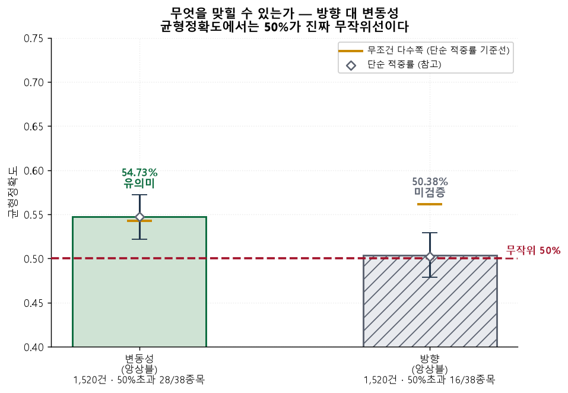
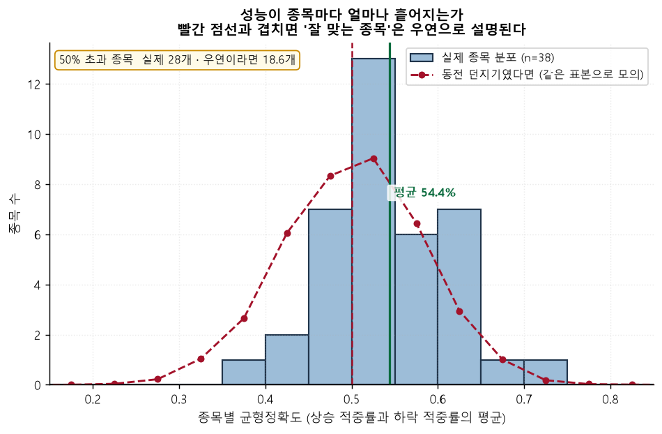
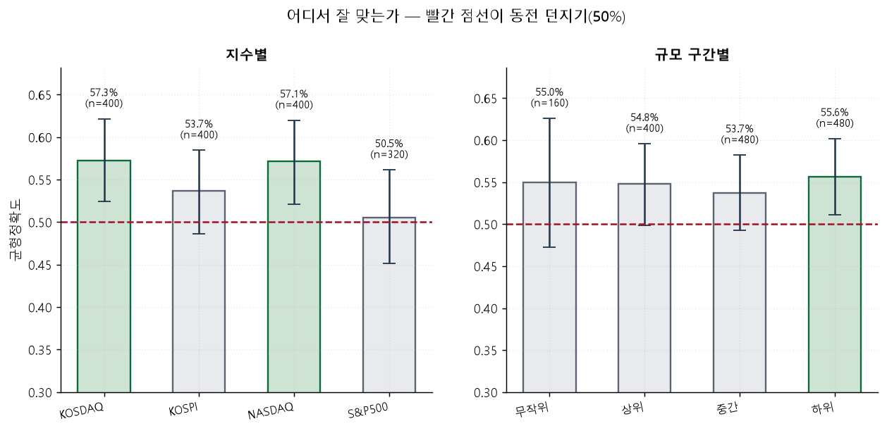
뉴스는 기본으로 켠다
피처 묶음은 all — 기술 19 + 시장 8 + 테마 4 + 뉴스 1 = 32개다. 뉴스가 없는 날은 중립 0.5로 채운다. 비워 두고 대치기에 맡겼더니 ‘값이 있는 행 = 최근 며칠’이라는 사실 자체를 모델이 외워 예측 확률이 0.0%/100.0%로 포화했다. 0.5로 채우면 열이 100% 차서 그 누수가 구조적으로 불가능해진다.
한동안 국내 종목은 학습 구간의 0.3% 만 차 있었다. 열이 사실상 상수라 ‘뉴스를 쓴다’고 적어 놓고 실제로는 아무것도 안 쓰는 상태였다. 구글 뉴스 RSS 가
after:/before: 를 받는다는 걸 확인하고 1년치를 소급 수집해 평가 구간을 덮었다.| 시장 | 종목수 | 평가 구간 | 전체 학습 구간 |
|---|---|---|---|
| KR | 20 | 62.5% | 8.2% |
| US | 18 | 73.6% | 21.3% |
구간당 100건 상한이 있어 거래가 뜸한 소형주는 여전히 낮다 — Solowin Holdings Ltd 8% · 피코그램 12% · Shoe Station Group Inc 12%. 종목별 전체 수치는
03_forecast/data/news_coverage.csv 에 있다.| 종목 | 시장 | 지수 | 행수 | 뉴스있는날 | 전체커버리지 | 평가구간커버리지 |
|---|---|---|---|---|---|---|
| NVIDIA Corp | US | NASDAQ | 1506 | 842 | 0.5591 | 1.0000 |
| 알테오젠 | KR | KOSDAQ | 1873 | 232 | 0.1239 | 1.0000 |
| SanDisk Corporation | US | NASDAQ | 379 | 230 | 0.6069 | 1.0000 |
| Tesla Inc | US | NASDAQ | 1506 | 832 | 0.5525 | 0.9750 |
| DB | KR | KOSPI | 1873 | 238 | 0.1271 | 0.9750 |
| Bank of America | US | S&P500 | 1506 | 841 | 0.5584 | 0.9750 |
| News Corp (Class B) | US | S&P500 | 1506 | 225 | 0.1494 | 0.9750 |
| SK스퀘어 | KR | KOSPI | 1155 | 213 | 0.1844 | 0.9500 |
| L3Harris | US | S&P500 | 1506 | 208 | 0.1381 | 0.9500 |
| 에코프로 | KR | KOSDAQ | 1873 | 227 | 0.1212 | 0.9500 |
| Fiserv | US | S&P500 | 1505 | 212 | 0.1409 | 0.9250 |
| 에코프로비엠 | KR | KOSDAQ | 1833 | 214 | 0.1167 | 0.9000 |
| Solid Biosciences Inc | US | NASDAQ | 1506 | 149 | 0.0989 | 0.9000 |
| Fox Corporation (Class B) | US | S&P500 | 1506 | 222 | 0.1474 | 0.9000 |
| MaxLinear Inc. | US | NASDAQ | 1506 | 87 | 0.0578 | 0.8750 |
| Veeva Systems | US | S&P500 | 1506 | 150 | 0.0996 | 0.8750 |
| Micron Technology | US | S&P500 | 1506 | 835 | 0.5544 | 0.8750 |
| 화신 | KR | KOSPI | 1873 | 99 | 0.0529 | 0.8500 |
| 포스코인터내셔널 | KR | KOSPI | 1873 | 194 | 0.1036 | 0.8500 |
| 삼성전자 | KR | KOSPI | 1873 | 233 | 0.1244 | 0.7500 |
| 광주신세계 | KR | KOSPI | 1873 | 170 | 0.0908 | 0.7500 |
| SK하이닉스 | KR | KOSPI | 1873 | 226 | 0.1207 | 0.7250 |
| 메타케어 | KR | KOSPI | 1873 | 107 | 0.0571 | 0.7250 |
| Trupanion Inc. | US | NASDAQ | 1506 | 49 | 0.0325 | 0.5750 |
| 한컴위드 | KR | KOSDAQ | 1873 | 109 | 0.0582 | 0.5250 |
| Erie Indemnity | US | S&P500 | 1506 | 66 | 0.0438 | 0.5250 |
| 지에프씨생명과학 | KR | KOSDAQ | 890 | 87 | 0.0978 | 0.5000 |
| Jasper Therapeutics Inc. | US | NASDAQ | 1506 | 38 | 0.0252 | 0.4500 |
| 대림통상 | KR | KOSPI | 1873 | 65 | 0.0347 | 0.4250 |
| 대성하이텍 | KR | KOSDAQ | 975 | 81 | 0.0831 | 0.4000 |
| 한솔홈데코 | KR | KOSPI | 1873 | 53 | 0.0283 | 0.3500 |
| 미래컴퍼니 | KR | KOSDAQ | 1873 | 96 | 0.0513 | 0.3000 |
| 코미팜 | KR | KOSDAQ | 1873 | 38 | 0.0203 | 0.2750 |
| Brenx Ltd | US | NASDAQ | 1060 | 33 | 0.0311 | 0.2750 |
| 에스프리즘 | KR | KOSDAQ | 1873 | 44 | 0.0235 | 0.1750 |
| 피코그램 | KR | KOSDAQ | 1173 | 23 | 0.0196 | 0.1250 |
| Shoe Station Group Inc | US | NASDAQ | 1506 | 35 | 0.0232 | 0.1250 |
| Solowin Holdings Ltd | US | NASDAQ | 739 | 12 | 0.0162 | 0.0750 |
피처를 얹을수록 좋아지는가 — 어블레이션
같은 조건에서 피처 묶음만 바꿔 가며 쟀다. 기술+시장 → +테마 → +뉴스(전체) 순으로 얹는다. 비용 때문에 이 측정만 주 1회 재학습으로 돌린다 — 어느 묶음이 나은지 비교하는 데는 충분하고, 매일 재학습으로 6조합을 돌리면 4시간이 넘는다.
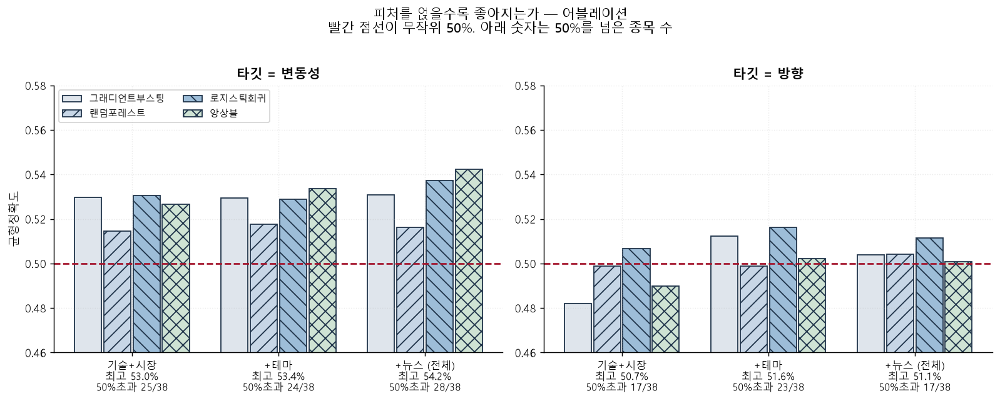
방향 — 기술+시장 50.66% (17/38종목) → 전체 51.15% (17/38종목), +0.49%p
변동성 — 기술+시장 53.05% (25/38종목) → 전체 54.22% (28/38종목), +1.17%p
| 타깃 | 피처 | 모델 | 평가건수 | 균형정확도 | 신뢰하한 | 신뢰상한 | 유의미 | 50%초과 | 종목수 |
|---|---|---|---|---|---|---|---|---|---|
| 변동성 | tech+mkt | 그래디언트부스팅 | 1520 | 0.5297 | 0.5046 | 0.5550 | 예 | 23 | 38 |
| 변동성 | tech+mkt | 랜덤포레스트 | 1520 | 0.5144 | 0.4894 | 0.5398 | 아니오 | 20 | 38 |
| 변동성 | tech+mkt | 로지스틱회귀 | 1520 | 0.5305 | 0.5053 | 0.5556 | 예 | 25 | 38 |
| 변동성 | tech+mkt | 앙상블 | 1520 | 0.5267 | 0.5013 | 0.5517 | 예 | 25 | 38 |
| 변동성 | tech+mkt+peer | 그래디언트부스팅 | 1520 | 0.5295 | 0.5040 | 0.5543 | 예 | 21 | 38 |
| 변동성 | tech+mkt+peer | 랜덤포레스트 | 1520 | 0.5176 | 0.4920 | 0.5424 | 아니오 | 23 | 38 |
| 변동성 | tech+mkt+peer | 로지스틱회귀 | 1520 | 0.5289 | 0.5033 | 0.5537 | 예 | 27 | 38 |
| 변동성 | tech+mkt+peer | 앙상블 | 1520 | 0.5336 | 0.5086 | 0.5589 | 예 | 24 | 38 |
| 변동성 | all | 그래디언트부스팅 | 1520 | 0.5308 | 0.5053 | 0.5556 | 예 | 21 | 38 |
| 변동성 | all | 랜덤포레스트 | 1520 | 0.5161 | 0.4907 | 0.5411 | 아니오 | 22 | 38 |
| 변동성 | all | 로지스틱회귀 | 1520 | 0.5372 | 0.5119 | 0.5622 | 예 | 25 | 38 |
| 변동성 | all | 앙상블 | 1520 | 0.5422 | 0.5173 | 0.5675 | 예 | 28 | 38 |
| 방향 | tech+mkt | 그래디언트부스팅 | 1520 | 0.4820 | 0.4567 | 0.5073 | 아니오 | 17 | 38 |
| 방향 | tech+mkt | 랜덤포레스트 | 1520 | 0.4988 | 0.4734 | 0.5240 | 아니오 | 16 | 38 |
| 방향 | tech+mkt | 로지스틱회귀 | 1520 | 0.5066 | 0.4814 | 0.5320 | 아니오 | 17 | 38 |
| 방향 | tech+mkt | 앙상블 | 1520 | 0.4898 | 0.4647 | 0.5153 | 아니오 | 20 | 38 |
| 방향 | tech+mkt+peer | 그래디언트부스팅 | 1520 | 0.5122 | 0.4867 | 0.5373 | 아니오 | 21 | 38 |
| 방향 | tech+mkt+peer | 랜덤포레스트 | 1520 | 0.4987 | 0.4734 | 0.5240 | 아니오 | 16 | 38 |
| 방향 | tech+mkt+peer | 로지스틱회귀 | 1520 | 0.5163 | 0.4907 | 0.5413 | 아니오 | 23 | 38 |
| 방향 | tech+mkt+peer | 앙상블 | 1520 | 0.5021 | 0.4767 | 0.5273 | 아니오 | 17 | 38 |
| 방향 | all | 그래디언트부스팅 | 1520 | 0.5039 | 0.4787 | 0.5293 | 아니오 | 22 | 38 |
| 방향 | all | 랜덤포레스트 | 1520 | 0.5041 | 0.4787 | 0.5293 | 아니오 | 19 | 38 |
| 방향 | all | 로지스틱회귀 | 1520 | 0.5115 | 0.4860 | 0.5366 | 아니오 | 17 | 38 |
| 방향 | all | 앙상블 | 1520 | 0.5009 | 0.4754 | 0.5260 | 아니오 | 17 | 38 |
모델을 왜 이걸로 정했나
같은 워크포워드를 모델별로 나눠 본 것이다. 앙상블 로 정하고 양쪽 타깃을 그 모델로 잰다. 타깃마다 각자의 최고 모델을 고르면 차이가 타깃 때문인지 모델 때문인지 알 수 없기 때문이다 — 실제로 변동성은 앙상블, 방향은 로지스틱이 뽑혀 서로 다른 모델끼리 견주는 표가 나갔던 적이 있다.
주력 타깃인 변동성 성적으로 모델 하나를 정한다.
| 타깃 | 모델 | 평가건수 | 균형정확도 | 신뢰하한 | 신뢰상한 | 유의미 | 50%초과 | 종목수 | 채택 |
|---|---|---|---|---|---|---|---|---|---|
| 방향 | 로지스틱회귀 | 1520 | 0.5077 | 0.4827 | 0.5333 | 아니오 | 19 | 38 | 아니오 |
| 방향 | 랜덤포레스트 | 1520 | 0.5039 | 0.4787 | 0.5293 | 아니오 | 19 | 38 | 아니오 |
| 방향 | 앙상블 | 1520 | 0.5038 | 0.4787 | 0.5293 | 아니오 | 16 | 38 | 예 |
| 방향 | 그래디언트부스팅 | 1520 | 0.4958 | 0.4707 | 0.5213 | 아니오 | 17 | 38 | 아니오 |
| 변동성 | 앙상블 | 1520 | 0.5473 | 0.5219 | 0.5721 | 예 | 28 | 38 | 예 |
| 변동성 | 로지스틱회귀 | 1520 | 0.5209 | 0.4960 | 0.5464 | 아니오 | 21 | 38 | 아니오 |
| 변동성 | 랜덤포레스트 | 1520 | 0.5207 | 0.4953 | 0.5457 | 아니오 | 21 | 38 | 아니오 |
| 변동성 | 그래디언트부스팅 | 1520 | 0.5110 | 0.4860 | 0.5365 | 아니오 | 18 | 38 | 아니오 |
서비스에 올릴 모델을 어떻게 정했나
원래는 조회할 때마다 그 종목 과거로 새로 학습했다. 연구에서는 맞지만 트레이딩 툴에서는 세 가지가 동시에 막힌다 — 학습 표본 250행이 필요해 상장 1년 반 미만 종목은 답이 없고, 조회당 4초가 들고, 이웃 풀과 비교군을 그때그때 모아야 한다.
셋 다 조회 시점에 학습한다에서 나온다. 그래서 여러 종목을 한꺼번에 학습해 모델 하나로 굳혔다. 피처 32개가 전부 무차원 값이라 삼성전자 행과 NVDA 행이 같은 척도이므로 그냥 쌓으면 된다. 학습 표본이 종목당 1,470행에서 153종목 263,277행이 됐다.
다만 표본이 는다고 더 맞는다는 보장은 없다. 종목 고유의 버릇은 평균에 묻히기 때문이다. 그래서 같은 평가 행에서 둘 다 쟀다.
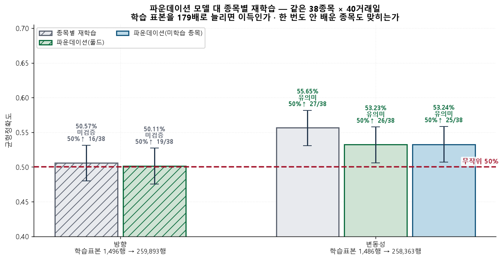
| 타깃 | 방식 | 모델 | 평가건수 | 균형정확도 | 균형_신뢰하한 | 균형_신뢰상한 | 유의미 | 50%초과종목 | 종목수 | 학습표본중앙값 |
|---|---|---|---|---|---|---|---|---|---|---|
| 방향 | 종목별 재학습 | 앙상블 | 1443 | 0.5057 | 0.4797 | 0.5314 | 아니오 | 16 | 38 | 1496 |
| 방향 | 파운데이션(풀드) | 풀드-앙상블 | 1443 | 0.5011 | 0.4755 | 0.5273 | 아니오 | 19 | 38 | 259893 |
| 변동성 | 종목별 재학습 | 앙상블 | 1443 | 0.5565 | 0.5305 | 0.5817 | 예 | 27 | 38 | 1486 |
| 변동성 | 파운데이션(미학습 종목) | 풀드-앙상블 | 1443 | 0.5324 | 0.5068 | 0.5584 | 예 | 25 | 38 | 200705 |
| 변동성 | 파운데이션(풀드) | 풀드-앙상블 | 1443 | 0.5323 | 0.5061 | 0.5577 | 예 | 26 | 38 | 258363 |
배포 — 기본=파운데이션(45ms) · 정밀모드=종목별학습(4초)
종목별 재학습가 2.42%p 앞서지만 그 대가가 45ms → 4,038ms (90배)다. 관심종목 목록처럼 여러 종목을 한 번에 그리는 화면에서는 종목당 4초가 성립하지 않으므로 기본값은 파운데이션으로 둔다. 파운데이션도 신뢰하한이 50%를 넘어 단독으로 쓸 수 있다는 것이 이 표의 핵심이다. 한 종목을 펼쳐 볼 때는 precise=True 로 종목별 학습을 켜면 된다.
한 번도 배우지 않은 종목도 맞히는가
위 표에는 구멍이 있었다 — 평가 38종목이 학습 풀 안에 들어 있다. 그래서 재고 있던 것은 시간 일반화이지 종목 일반화가 아니었다. 6,228종목에 배포하겠다면서 정작 그 주장은 검증하지 않은 상태였다.
그래서 평가 38종목을 학습에서 통째로 뺐다 (153 → 115종목). 모델은 이 종목들을 단 한 행도 본 적이 없다. 평가 행은 앞의 둘과 완전히 같다.
학습에 포함 53.23% · 한 번도 배운 적 없음 53.24% · 차이 +0.01%p
평가 38종목을 학습에서 통째로 빼고(153→115종목) 다시 쟀다. 차이가 0.1%p 남짓이라 성능이 그 종목을 배웠기 때문이 아니라 종목 사이에 공통된 것을 배웠기 때문임을 보인다. 6,228종목에 그대로 배포할 수 있다는 근거다. 재현: python cli.py eval-pooled --holdout
모델 선택 — 정확도와 시간을 함께
정확도만으로 고르지 않았다. 관심종목을 누르면 바로 나와야 하므로 점수 = 균형정확도 − 0.02 × log10(1 + 초과ms / 기준ms) 로 정렬한다. 기준(1초) 아래 지연은 벌점이 0이다 — 관심종목을 눌렀을 때 20ms 든 80ms 든 사용자는 구별하지 못하므로 그 구간에서 정확도를 깎을 이유가 없다.
총소요초로 매기면 안 된다. 그건 백테스트가 얼마나 오래 돌았는지일 뿐 사용자가 겪는 지연이 아니다. 실제로 그렇게 매겼다가 재학습 주기만 바꿨는데 선택된 모델이 뒤집힌 적이 있다 — 앙상블(54.7%)을 버리고 로지스틱(52.1%)이 뽑혔다.
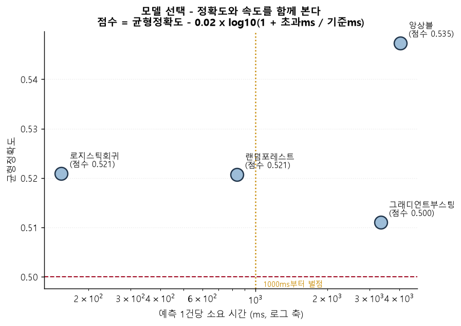
| 모델 | 평가건수 | 적중 | 적중률 | 균형정확도 | 총소요초 | 건당ms | 점수 |
|---|---|---|---|---|---|---|---|
| 앙상블 | 1520 | 832 | 0.5474 | 0.5473 | 6,139.0 | 4,038.8 | 0.5352 |
| 로지스틱회귀 | 1520 | 791 | 0.5204 | 0.5209 | 233.7900 | 153.8000 | 0.5209 |
| 랜덤포레스트 | 1520 | 792 | 0.5211 | 0.5207 | 1,268.0 | 834.2000 | 0.5207 |
| 그래디언트부스팅 | 1520 | 777 | 0.5112 | 0.5110 | 5,080.6 | 3,342.5 | 0.5005 |
다음 거래일 예측 — 전날 데이터만으로
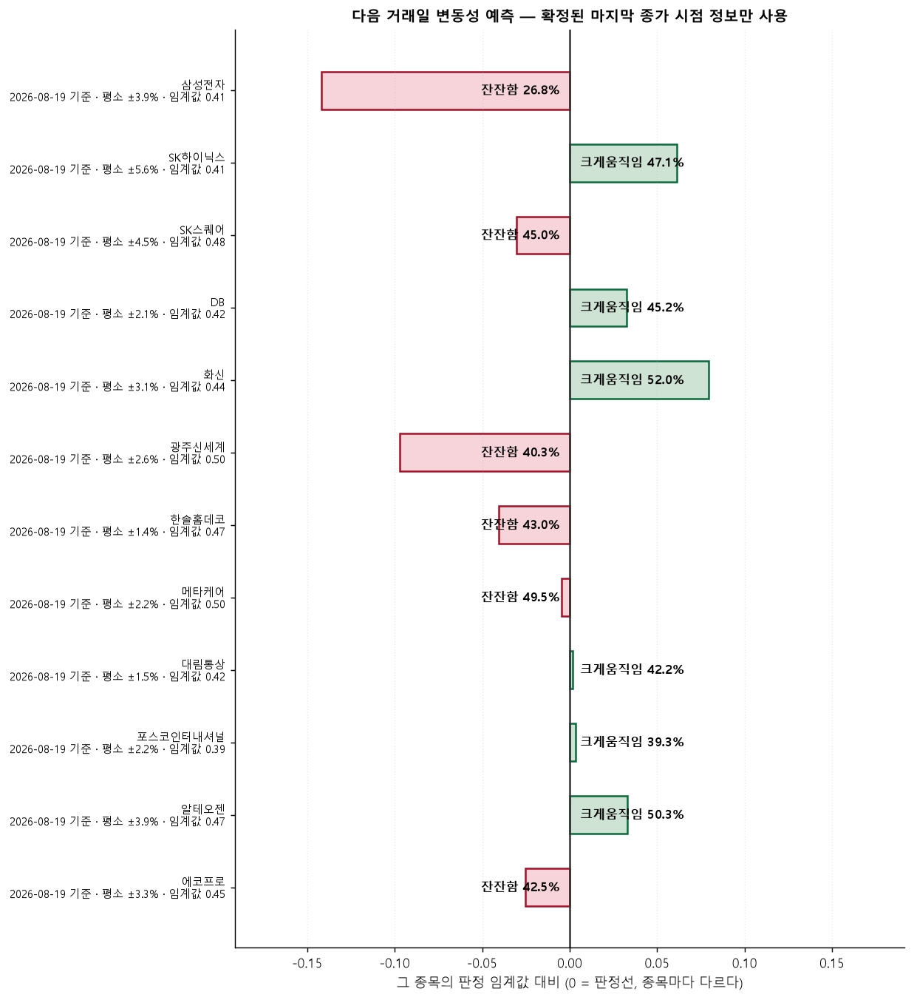
| 종목 | 지수 | 기준일 | 기준종가 | 예측 | 확률 | 예상등락률 | 확신도 | 학습표본 | 뉴스사용 | 소요초 |
|---|---|---|---|---|---|---|---|---|---|---|
| 삼성전자 | KOSPI | 2026-08-19 | 247,500.0 | 잔잔함 | 0.2681 | 0.2450 | 0.2406 | 1862 | 예 | 28.1000 |
| SK하이닉스 | KOSPI | 2026-08-19 | 1,500,000.0 | 크게움직임 | 0.4712 | -1.0310 | 0.1038 | 1862 | 예 | 13.5700 |
| SK스퀘어 | KOSPI | 2026-08-19 | 1,004,000.0 | 잔잔함 | 0.4496 | -1.3600 | 0.0585 | 1144 | 예 | 14.9900 |
| DB | KOSPI | 2026-08-19 | 1,451.0 | 크게움직임 | 0.4524 | 1.0930 | 0.0559 | 1862 | 예 | 22.7300 |
| 화신 | KOSPI | 2026-08-19 | 8,520.0 | 크게움직임 | 0.5196 | -0.8590 | 0.1422 | 1862 | 예 | 24.4000 |
| 광주신세계 | KOSPI | 2026-08-19 | 37,650.0 | 잔잔함 | 0.4030 | -2.2490 | 0.1940 | 1862 | 예 | 20.2000 |
| 한솔홈데코 | KOSPI | 2026-08-19 | 1,859.0 | 잔잔함 | 0.4296 | -0.4280 | 0.0763 | 1862 | 예 | 19.6700 |
| 메타케어 | KOSPI | 2026-08-19 | 1,350.0 | 잔잔함 | 0.4955 | -1.5830 | 0.0090 | 1862 | 예 | 27.3200 |
| 대림통상 | KOSPI | 2026-08-19 | 1,974.0 | 크게움직임 | 0.4218 | -0.2770 | 0.0032 | 1862 | 예 | 28.4600 |
| 포스코인터내셔널 | KOSPI | 2026-08-19 | 50,700.0 | 크게움직임 | 0.3934 | -0.0170 | 0.0055 | 1862 | 예 | 25.2100 |
| 알테오젠 | KOSDAQ | 2026-08-19 | 303,500.0 | 크게움직임 | 0.5031 | -0.1790 | 0.0625 | 1862 | 예 | 22.3100 |
| 에코프로 | KOSDAQ | 2026-08-19 | 86,200.0 | 잔잔함 | 0.4246 | 0.7930 | 0.0461 | 1862 | 예 | 23.1600 |
| 에코프로비엠 | KOSDAQ | 2026-08-19 | 109,800.0 | 크게움직임 | 0.5501 | -0.7180 | 0.2374 | 1822 | 예 | 20.4600 |
| 한컴위드 | KOSDAQ | 2026-08-19 | 3,530.0 | 잔잔함 | 0.3812 | 0.8450 | 0.2670 | 1862 | 예 | 20.9300 |
| 대성하이텍 | KOSDAQ | 2026-08-19 | 5,910.0 | 잔잔함 | 0.4857 | 2.4990 | 0.1479 | 964 | 예 | 20.9600 |
| 미래컴퍼니 | KOSDAQ | 2026-08-19 | 11,170.0 | 크게움직임 | 0.6095 | -0.2590 | 0.1501 | 1862 | 예 | 24.7100 |
| 에스프리즘 | KOSDAQ | 2026-08-19 | 4,100.0 | 잔잔함 | 0.5179 | 0.2200 | 0.0041 | 1862 | 예 | 23.5600 |
| 지에프씨생명과학 | KOSDAQ | 2026-08-19 | 5,370.0 | 크게움직임 | 0.5482 | -0.2710 | 0.2940 | 879 | 예 | 18.9100 |
| 코미팜 | KOSDAQ | 2026-08-19 | 9,300.0 | 크게움직임 | 0.6204 | 0.0810 | 0.1931 | 1862 | 예 | 26.4300 |
| 피코그램 | KOSDAQ | 2026-08-19 | 1,567.0 | 크게움직임 | 0.5633 | 1.1300 | 0.3282 | 1162 | 예 | 24.5800 |
| NVIDIA Corp | NASDAQ | 2026-08-19 | 217.5600 | 잔잔함 | 0.4577 | 0.2450 | 0.2618 | 1495 | 예 | 28.7200 |
| SanDisk Corporation | NASDAQ | 2026-08-19 | 1,568.9 | 잔잔함 | 0.4326 | 1.4900 | 0.0316 | 369 | 예 | 19.9500 |
| Tesla Inc | NASDAQ | 2026-08-19 | 351.1200 | 크게움직임 | 0.5101 | 0.4490 | 0.0578 | 1495 | 예 | 21.3100 |
| Shoe Station Group Inc | NASDAQ | 2026-08-19 | 15.8700 | 크게움직임 | 0.5641 | -0.3060 | 0.2075 | 1495 | 예 | 23.0300 |
| Trupanion Inc. | NASDAQ | 2026-08-19 | 31.1000 | 잔잔함 | 0.4540 | 0.2670 | 0.1894 | 1495 | 예 | 26.1800 |
| Solid Biosciences Inc | NASDAQ | 2026-08-19 | 9.7400 | 잔잔함 | 0.5805 | 0.6610 | 0.0162 | 1495 | 예 | 22.0100 |
| Jasper Therapeutics Inc. | NASDAQ | 2026-08-19 | 0.7466 | 잔잔함 | 0.4967 | 1.4360 | 0.0261 | 1495 | 예 | 25.8300 |
| Brenx Ltd | NASDAQ | 2026-08-19 | 2.9700 | 크게움직임 | 0.7932 | -3.0650 | 0.4967 | 1050 | 예 | 30.8000 |
| MaxLinear Inc. | NASDAQ | 2026-08-19 | 66.4300 | 잔잔함 | 0.4251 | 0.4450 | 0.0647 | 1495 | 예 | 20.9900 |
| Solowin Holdings Ltd | NASDAQ | 2026-08-19 | 2.5100 | 크게움직임 | 0.7279 | 1.1760 | 0.1741 | 729 | 예 | 21.5900 |
| Micron Technology | S&P500 | 2026-08-19 | 937.1050 | 잔잔함 | 0.4647 | -1.5410 | 0.0495 | 1495 | 예 | 15.6500 |
| Fiserv | S&P500 | 2026-08-19 | 52.0800 | 잔잔함 | 0.4408 | -0.7940 | 0.0755 | 1494 | 예 | 15.9700 |
| Veeva Systems | S&P500 | 2026-08-19 | 251.0000 | 잔잔함 | 0.5327 | -0.8480 | 0.0135 | 1495 | 예 | 15.9100 |
| L3Harris | S&P500 | 2026-08-19 | 277.1100 | 잔잔함 | 0.4125 | -0.1530 | 0.2067 | 1495 | 예 | 16.6100 |
| News Corp (Class B) | S&P500 | 2026-08-19 | 33.5300 | 크게움직임 | 0.5428 | 0.1950 | 0.0242 | 1495 | 예 | 16.4000 |
| Erie Indemnity | S&P500 | 2026-08-19 | 267.3800 | 크게움직임 | 0.5746 | 0.5750 | 0.1267 | 1495 | 예 | 16.9600 |
| Fox Corporation (Class B) | S&P500 | 2026-08-19 | 60.3900 | 잔잔함 | 0.4347 | -0.1190 | 0.1640 | 1495 | 예 | 16.0700 |
| Bank of America | S&P500 | 2026-08-19 | 63.1700 | 크게움직임 | 0.6020 | -0.0130 | 0.2893 | 1495 | 예 | 15.0400 |
종목별 성적
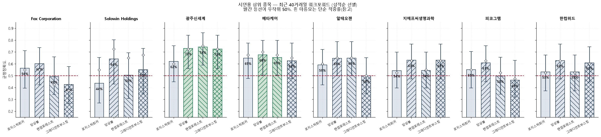
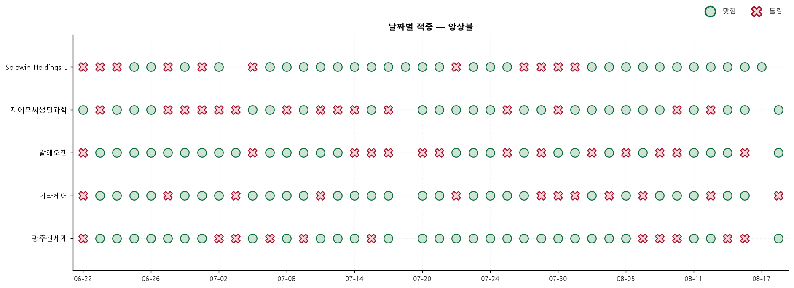
| 종목 | 모델 | 평가일 | 적중 | 적중률 | 균형정확도 | 신뢰구간하한 | 신뢰구간상한 | 무지성기준선 | 기준선대비 |
|---|---|---|---|---|---|---|---|---|---|
| Bank of America | 랜덤포레스트 | 40 | 26 | 0.6500 | 0.6515 | 0.4951 | 0.7787 | 0.5500 | 0.1000 |
| Bank of America | 앙상블 | 40 | 24 | 0.6000 | 0.5859 | 0.4460 | 0.7365 | 0.5500 | 0.0500 |
| Bank of America | 그래디언트부스팅 | 40 | 22 | 0.5500 | 0.5404 | 0.3983 | 0.6929 | 0.5500 | 0.0000 |
| Bank of America | 로지스틱회귀 | 40 | 19 | 0.4750 | 0.4773 | 0.3294 | 0.6250 | 0.5500 | -0.0750 |
| Brenx Ltd | 앙상블 | 40 | 23 | 0.5750 | 0.5750 | 0.4219 | 0.7149 | 0.5000 | 0.0750 |
| Brenx Ltd | 그래디언트부스팅 | 40 | 21 | 0.5250 | 0.5250 | 0.3750 | 0.6706 | 0.5000 | 0.0250 |
| Brenx Ltd | 랜덤포레스트 | 40 | 20 | 0.5000 | 0.5000 | 0.3520 | 0.6480 | 0.5000 | 0.0000 |
| Brenx Ltd | 로지스틱회귀 | 40 | 20 | 0.5000 | 0.5000 | 0.3520 | 0.6480 | 0.5000 | 0.0000 |
| DB | 로지스틱회귀 | 40 | 21 | 0.5250 | 0.5379 | 0.3750 | 0.6706 | 0.5500 | -0.0250 |
| DB | 앙상블 | 40 | 21 | 0.5250 | 0.5480 | 0.3750 | 0.6706 | 0.5500 | -0.0250 |
| DB | 랜덤포레스트 | 40 | 20 | 0.5000 | 0.5202 | 0.3520 | 0.6480 | 0.5500 | -0.0500 |
| DB | 그래디언트부스팅 | 40 | 19 | 0.4750 | 0.4874 | 0.3294 | 0.6250 | 0.5500 | -0.0750 |
| Erie Indemnity | 랜덤포레스트 | 40 | 21 | 0.5250 | 0.5486 | 0.3750 | 0.6706 | 0.5750 | -0.0500 |
| Erie Indemnity | 앙상블 | 40 | 18 | 0.4500 | 0.5064 | 0.3071 | 0.6017 | 0.5750 | -0.1250 |
| Erie Indemnity | 로지스틱회귀 | 40 | 16 | 0.4000 | 0.4629 | 0.2635 | 0.5540 | 0.5750 | -0.1750 |
| Erie Indemnity | 그래디언트부스팅 | 40 | 14 | 0.3500 | 0.3581 | 0.2213 | 0.5049 | 0.5750 | -0.2250 |
| Fiserv | 로지스틱회귀 | 40 | 19 | 0.4750 | 0.5177 | 0.3294 | 0.6250 | 0.5500 | -0.0750 |
| Fiserv | 랜덤포레스트 | 40 | 18 | 0.4500 | 0.4747 | 0.3071 | 0.6017 | 0.5500 | -0.1000 |
| Fiserv | 앙상블 | 40 | 18 | 0.4500 | 0.4444 | 0.3071 | 0.6017 | 0.5500 | -0.1000 |
| Fiserv | 그래디언트부스팅 | 40 | 17 | 0.4250 | 0.4571 | 0.2851 | 0.5781 | 0.5500 | -0.1250 |
| Fox Corporation (Class B) | 로지스틱회귀 | 40 | 22 | 0.5500 | 0.5627 | 0.3983 | 0.6929 | 0.5750 | -0.0250 |
| Fox Corporation (Class B) | 앙상블 | 40 | 22 | 0.5500 | 0.6010 | 0.3983 | 0.6929 | 0.5750 | -0.0250 |
| Fox Corporation (Class B) | 랜덤포레스트 | 40 | 17 | 0.4250 | 0.4923 | 0.2851 | 0.5781 | 0.5750 | -0.1500 |
| Fox Corporation (Class B) | 그래디언트부스팅 | 40 | 15 | 0.3750 | 0.4258 | 0.2422 | 0.5297 | 0.5750 | -0.2000 |
| Jasper Therapeutics Inc. | 그래디언트부스팅 | 40 | 22 | 0.5500 | 0.5689 | 0.3983 | 0.6929 | 0.5250 | 0.0250 |
| Jasper Therapeutics Inc. | 랜덤포레스트 | 40 | 20 | 0.5000 | 0.5213 | 0.3520 | 0.6480 | 0.5250 | -0.0250 |
| Jasper Therapeutics Inc. | 로지스틱회귀 | 40 | 20 | 0.5000 | 0.5038 | 0.3520 | 0.6480 | 0.5250 | -0.0250 |
| Jasper Therapeutics Inc. | 앙상블 | 40 | 20 | 0.5000 | 0.5138 | 0.3520 | 0.6480 | 0.5250 | -0.0250 |
| L3Harris | 랜덤포레스트 | 40 | 21 | 0.5250 | 0.5250 | 0.3750 | 0.6706 | 0.5000 | 0.0250 |
| L3Harris | 앙상블 | 40 | 19 | 0.4750 | 0.4750 | 0.3294 | 0.6250 | 0.5000 | -0.0250 |
| L3Harris | 로지스틱회귀 | 40 | 18 | 0.4500 | 0.4500 | 0.3071 | 0.6017 | 0.5000 | -0.0500 |
| L3Harris | 그래디언트부스팅 | 40 | 17 | 0.4250 | 0.4250 | 0.2851 | 0.5781 | 0.5000 | -0.0750 |
| MaxLinear Inc. | 로지스틱회귀 | 40 | 26 | 0.6500 | 0.6717 | 0.4951 | 0.7787 | 0.5500 | 0.1000 |
| MaxLinear Inc. | 앙상블 | 40 | 24 | 0.6000 | 0.6010 | 0.4460 | 0.7365 | 0.5500 | 0.0500 |
| MaxLinear Inc. | 랜덤포레스트 | 40 | 20 | 0.5000 | 0.4848 | 0.3520 | 0.6480 | 0.5500 | -0.0500 |
| MaxLinear Inc. | 그래디언트부스팅 | 40 | 19 | 0.4750 | 0.4520 | 0.3294 | 0.6250 | 0.5500 | -0.0750 |
| Micron Technology | 로지스틱회귀 | 40 | 23 | 0.5750 | 0.5631 | 0.4219 | 0.7149 | 0.5500 | 0.0250 |
| Micron Technology | 앙상블 | 40 | 22 | 0.5500 | 0.5303 | 0.3983 | 0.6929 | 0.5500 | 0.0000 |
| Micron Technology | 랜덤포레스트 | 40 | 20 | 0.5000 | 0.5000 | 0.3520 | 0.6480 | 0.5500 | -0.0500 |
| Micron Technology | 그래디언트부스팅 | 40 | 18 | 0.4500 | 0.4495 | 0.3071 | 0.6017 | 0.5500 | -0.1000 |
| NVIDIA Corp | 앙상블 | 40 | 22 | 0.5500 | 0.5500 | 0.3983 | 0.6929 | 0.5000 | 0.0500 |
| NVIDIA Corp | 그래디언트부스팅 | 40 | 21 | 0.5250 | 0.5250 | 0.3750 | 0.6706 | 0.5000 | 0.0250 |
| NVIDIA Corp | 랜덤포레스트 | 40 | 21 | 0.5250 | 0.5250 | 0.3750 | 0.6706 | 0.5000 | 0.0250 |
| NVIDIA Corp | 로지스틱회귀 | 40 | 21 | 0.5250 | 0.5250 | 0.3750 | 0.6706 | 0.5000 | 0.0250 |
| News Corp (Class B) | 로지스틱회귀 | 40 | 29 | 0.7250 | 0.6979 | 0.5716 | 0.8389 | 0.6000 | 0.1250 |
| News Corp (Class B) | 앙상블 | 40 | 19 | 0.4750 | 0.4792 | 0.3294 | 0.6250 | 0.6000 | -0.1250 |
| News Corp (Class B) | 랜덤포레스트 | 40 | 18 | 0.4500 | 0.5000 | 0.3071 | 0.6017 | 0.6000 | -0.1500 |
| News Corp (Class B) | 그래디언트부스팅 | 40 | 16 | 0.4000 | 0.3750 | 0.2635 | 0.5540 | 0.6000 | -0.2000 |
| SK스퀘어 | 로지스틱회귀 | 40 | 20 | 0.5000 | 0.4949 | 0.3520 | 0.6480 | 0.5500 | -0.0500 |
| SK스퀘어 | 앙상블 | 40 | 18 | 0.4500 | 0.4444 | 0.3071 | 0.6017 | 0.5500 | -0.1000 |
| SK스퀘어 | 그래디언트부스팅 | 40 | 16 | 0.4000 | 0.3990 | 0.2635 | 0.5540 | 0.5500 | -0.1500 |
| SK스퀘어 | 랜덤포레스트 | 40 | 16 | 0.4000 | 0.3990 | 0.2635 | 0.5540 | 0.5500 | -0.1500 |
| SK하이닉스 | 그래디언트부스팅 | 40 | 22 | 0.5500 | 0.5388 | 0.3983 | 0.6929 | 0.5250 | 0.0250 |
| SK하이닉스 | 앙상블 | 40 | 19 | 0.4750 | 0.4549 | 0.3294 | 0.6250 | 0.5250 | -0.0500 |
| SK하이닉스 | 랜덤포레스트 | 40 | 17 | 0.4250 | 0.4123 | 0.2851 | 0.5781 | 0.5250 | -0.1000 |
| SK하이닉스 | 로지스틱회귀 | 40 | 17 | 0.4250 | 0.4173 | 0.2851 | 0.5781 | 0.5250 | -0.1000 |
| SanDisk Corporation | 그래디언트부스팅 | 40 | 24 | 0.6000 | 0.5909 | 0.4460 | 0.7365 | 0.5500 | 0.0500 |
| SanDisk Corporation | 앙상블 | 40 | 23 | 0.5750 | 0.5480 | 0.4219 | 0.7149 | 0.5500 | 0.0250 |
| SanDisk Corporation | 랜덤포레스트 | 40 | 19 | 0.4750 | 0.4672 | 0.3294 | 0.6250 | 0.5500 | -0.0750 |
| SanDisk Corporation | 로지스틱회귀 | 40 | 18 | 0.4500 | 0.4646 | 0.3071 | 0.6017 | 0.5500 | -0.1000 |
위 60행만 표시. 전체는 CSV 에 있다.
| 지수 | 모델 | 평가일 | 적중률 | 균형정확도 |
|---|---|---|---|---|
| KOSDAQ | 앙상블 | 400 | 0.5725 | 0.5728 |
| KOSDAQ | 랜덤포레스트 | 400 | 0.5575 | 0.5586 |
| KOSDAQ | 그래디언트부스팅 | 400 | 0.5450 | 0.5461 |
| KOSDAQ | 로지스틱회귀 | 400 | 0.5275 | 0.5271 |
| KOSPI | 앙상블 | 400 | 0.5350 | 0.5367 |
| KOSPI | 그래디언트부스팅 | 400 | 0.5100 | 0.5099 |
| KOSPI | 랜덤포레스트 | 400 | 0.5100 | 0.5128 |
| KOSPI | 로지스틱회귀 | 400 | 0.5075 | 0.5080 |
| NASDAQ | 앙상블 | 400 | 0.5700 | 0.5714 |
| NASDAQ | 그래디언트부스팅 | 400 | 0.5425 | 0.5412 |
| NASDAQ | 로지스틱회귀 | 400 | 0.5275 | 0.5345 |
| NASDAQ | 랜덤포레스트 | 400 | 0.5100 | 0.5100 |
| S&P500 | 로지스틱회귀 | 320 | 0.5188 | 0.5213 |
| S&P500 | 랜덤포레스트 | 320 | 0.5031 | 0.5052 |
| S&P500 | 앙상블 | 320 | 0.5031 | 0.5051 |
| S&P500 | 그래디언트부스팅 | 320 | 0.4312 | 0.4323 |
| 구분 | 모델 | 평가일 | 적중률 | 균형정확도 |
|---|---|---|---|---|
| 무작위 | 랜덤포레스트 | 160 | 0.5688 | 0.5697 |
| 무작위 | 앙상블 | 160 | 0.5500 | 0.5496 |
| 무작위 | 로지스틱회귀 | 160 | 0.5312 | 0.5306 |
| 무작위 | 그래디언트부스팅 | 160 | 0.5250 | 0.5259 |
| 상위 | 앙상블 | 400 | 0.5475 | 0.5479 |
| 상위 | 랜덤포레스트 | 400 | 0.5250 | 0.5257 |
| 상위 | 로지스틱회귀 | 400 | 0.5250 | 0.5245 |
| 상위 | 그래디언트부스팅 | 400 | 0.5200 | 0.5204 |
| 중간 | 앙상블 | 480 | 0.5375 | 0.5370 |
| 중간 | 그래디언트부스팅 | 480 | 0.5125 | 0.5120 |
| 중간 | 랜덤포레스트 | 480 | 0.5062 | 0.5058 |
| 중간 | 로지스틱회귀 | 480 | 0.4958 | 0.4945 |
| 하위 | 앙상블 | 480 | 0.5562 | 0.5565 |
| 하위 | 로지스틱회귀 | 480 | 0.5375 | 0.5363 |
| 하위 | 랜덤포레스트 | 480 | 0.5167 | 0.5163 |
| 하위 | 그래디언트부스팅 | 480 | 0.4979 | 0.4976 |
2. 급락 후 반등 — 검증을 통과한 신호
이상감지의 robust z 는 후행 지표다. 이미 움직인 뒤에 뜨므로 ‘지금 사라’로 읽으면 안 된다. 그런데 급락 쪽에서는 그 후행성이 오히려 쓸모가 있다 — 선을 넘게 떨어졌으면 되돌아온다는 평균 회귀 때문이다. 그 가설을 그대로 측정했다.
| 임계값 | 급락n | 급락후반등률 | 평상시상승률 | 순초과 | 신뢰구간하한 | 신뢰구간상한 | 유의미 | 급등n | 급등후하락률 | 급등순초과 |
|---|---|---|---|---|---|---|---|---|---|---|
| 2.0000 | 2691 | 0.5136 | 0.4752 | 0.0384 | 0.4947 | 0.5324 | 예 | 3436 | 0.5044 | -0.0205 |
| 2.5000 | 1501 | 0.5350 | 0.4752 | 0.0598 | 0.5097 | 0.5601 | 예 | 2157 | 0.5141 | -0.0107 |
| 3.0000 | 875 | 0.5440 | 0.4752 | 0.0688 | 0.5109 | 0.5767 | 예 | 1420 | 0.5162 | -0.0086 |
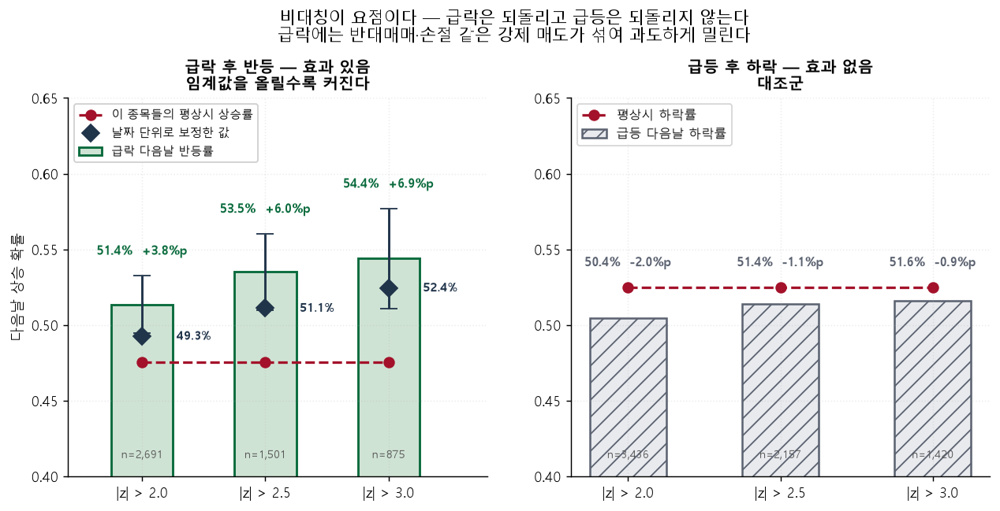
급락은 시장 전체가 같이 빠지는 날에 몰린다. 위 표의 신호 건수를 그대로 독립 관측으로 세면 유의성이 부풀려진다 — 같은 날 17종목이 걸렸는데 그날 시장이 반등하면 17건이 한꺼번에 맞기 때문이다. 사실상 관측 1개다.
아래는 같은 날 신호를 하나로 묶어 날짜를 관측 단위로 삼은 값이다. 표본이 줄어 구간이 넓어지지만 그게 정직한 폭이다.
| 임계값 | 신호건수 | 서로다른날짜 | 날짜당평균 | 급락후반등률 | 평상시상승률 | 순초과 | 신뢰구간하한 | 신뢰구간상한 | 유의미 |
|---|---|---|---|---|---|---|---|---|---|
| 2.0000 | 2691 | 1115 | 2.4100 | 0.4926 | 0.4752 | 0.0174 | 0.4631 | 0.5217 | 아니오 |
| 2.5000 | 1501 | 810 | 1.8500 | 0.5111 | 0.4752 | 0.0360 | 0.4767 | 0.5454 | 예 |
| 3.0000 | 875 | 561 | 1.5600 | 0.5245 | 0.4752 | 0.0494 | 0.4827 | 0.5651 | 예 |
사후검증 — 앞 구간의 효과가 뒤 구간에서도 나오는가
전 구간을 한 번에 재면 ‘과거에 이런 규칙성이 있었다’까지만 말할 수 있다. 종목마다 시계열을 앞/뒤로 갈라 따로 쟀다. 앞에서만 나오고 뒤에서 사라지면 그건 신호가 아니다.
| 구간 | 임계값 | 급락n | 급락후반등률 | 평상시상승률 | 순초과 | 신뢰구간하한 | 신뢰구간상한 | 유의미 | 서로다른날짜 | 하루최대동시 |
|---|---|---|---|---|---|---|---|---|---|---|
| 뒤구간 | 2.0000 | 1383 | 0.5061 | 0.4800 | 0.0262 | 0.4798 | 0.5324 | 아니오 | 586 | 23 |
| 앞구간 | 2.0000 | 1292 | 0.5201 | 0.4651 | 0.0550 | 0.4929 | 0.5473 | 예 | 617 | 16 |
| 뒤구간 | 2.5000 | 759 | 0.5296 | 0.4800 | 0.0497 | 0.4941 | 0.5649 | 예 | 426 | 20 |
| 앞구간 | 2.5000 | 734 | 0.5381 | 0.4651 | 0.0731 | 0.5020 | 0.5739 | 예 | 432 | 14 |
| 뒤구간 | 3.0000 | 438 | 0.5411 | 0.4800 | 0.0611 | 0.4943 | 0.5872 | 예 | 287 | 17 |
| 앞구간 | 3.0000 | 432 | 0.5440 | 0.4651 | 0.0789 | 0.4968 | 0.5904 | 예 | 288 | 11 |
① 단조 증가 — 임계값을 2.0 → 3.0 으로 올릴수록 효과가 커진다. 우연이라면 임계값과 무관해야 한다.
② 사후검증 통과 — 앞 구간과 뒤 구간 양쪽에서 나온다.
③ 비대칭 — 대조군인 급등 쪽에서는 아무 효과도 없다. 급락은 강제 청산(마진콜·손절)이 밀어내는 것이라 되돌아오지만, 급등에는 그런 강제력이 없다. 한쪽에서만 나오는 효과라는 점이 이 발견의 신뢰도를 스스로 증명한다.
다만 가장 약한 임계값(2.0)은 날짜 보정 후 유의성을 잃었다. 그것도 그대로 싣는다.
오늘 뜬 신호
| 종목 | 지수 | 신호일 | 당일수익% | z | 종가 | 과거급락n | 과거반등률 | 평상시상승률 |
|---|---|---|---|---|---|---|---|---|
| L3Harris | S&P500 | 2026-08-17 | -4.6100 | -3.0200 | 278.3800 | 18 | 0.5000 | 0.5091 |
3. 이상감지 · 종목별 위험도
이상감지는 언제 이상한가를 답한다. 위험도는 다른 질문이다 — 이 종목은 원래 얼마나 험한가. 관심종목을 고를 때 필요한 건 후자다. 이상 신호가 하루 3번 뜨는 종목과 2주에 한 번 뜨는 종목은 같은 방식으로 다룰 수 없다.
다섯 축(변동성·이상빈도·갭·꼬리·유동성)을 비교군 153종목 안에서의 백분위로 환산해 가중 평균한다. 절대 기준을 쓰지 않는 이유는 시장 국면마다 ‘높은 변동성’의 값이 달라지기 때문이다 — 2020년 3월엔 대형주도 5%를 찍었다.
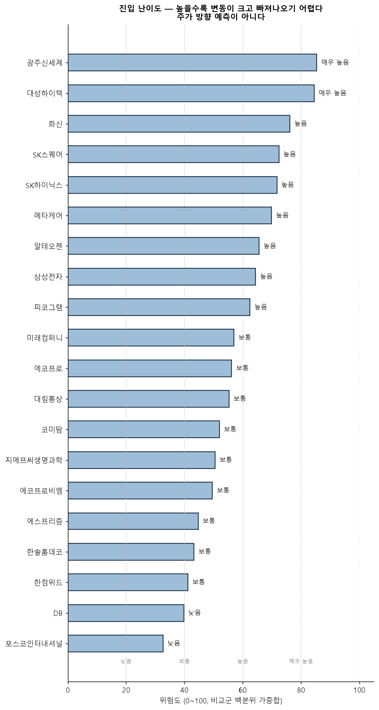
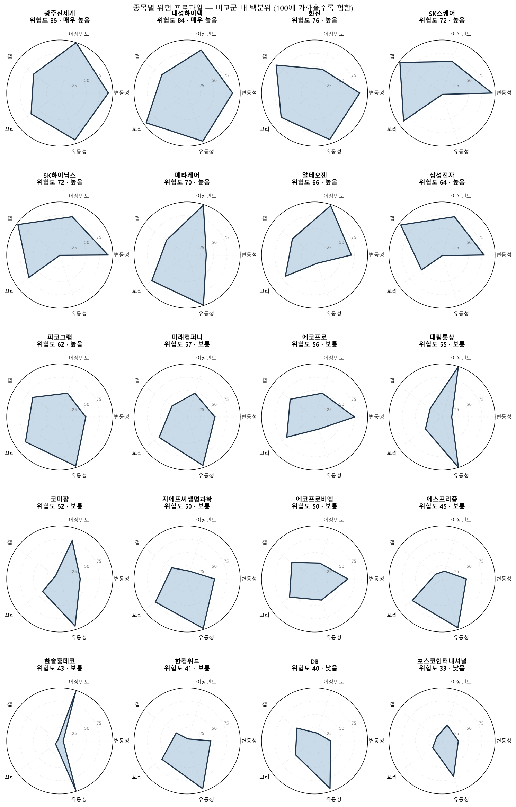
| 표시이름 | 위험도 | 등급 | 설명 | 비교군 |
|---|---|---|---|---|
| 광주신세계 | 85.4000 | 매우 높음 | 하루 안에 크게 흔들립니다. 소액으로 시작하고 손절 폭을 넓게 잡아야 합니다 | 153 |
| 대성하이텍 | 84.5000 | 매우 높음 | 하루 안에 크게 흔들립니다. 소액으로 시작하고 손절 폭을 넓게 잡아야 합니다 | 153 |
| 화신 | 76.2000 | 높음 | 변동이 큰 편입니다. 분할 매수를 권합니다 | 153 |
| SK스퀘어 | 72.4000 | 높음 | 변동이 큰 편입니다. 분할 매수를 권합니다 | 153 |
| SK하이닉스 | 71.7000 | 높음 | 변동이 큰 편입니다. 분할 매수를 권합니다 | 153 |
| 메타케어 | 69.9000 | 높음 | 변동이 큰 편입니다. 분할 매수를 권합니다 | 153 |
| 알테오젠 | 65.6000 | 높음 | 변동이 큰 편입니다. 분할 매수를 권합니다 | 153 |
| 삼성전자 | 64.4000 | 높음 | 변동이 큰 편입니다. 분할 매수를 권합니다 | 153 |
| 피코그램 | 62.5000 | 높음 | 변동이 큰 편입니다. 분할 매수를 권합니다 | 153 |
| 미래컴퍼니 | 57.0000 | 보통 | 일반적인 수준입니다 | 153 |
| 에코프로 | 56.2000 | 보통 | 일반적인 수준입니다 | 153 |
| 대림통상 | 55.3000 | 보통 | 일반적인 수준입니다 | 153 |
| 코미팜 | 52.0000 | 보통 | 일반적인 수준입니다 | 153 |
| 지에프씨생명과학 | 50.5000 | 보통 | 일반적인 수준입니다 | 153 |
| 에코프로비엠 | 49.6000 | 보통 | 일반적인 수준입니다 | 153 |
| 에스프리즘 | 44.7000 | 보통 | 일반적인 수준입니다 | 153 |
| 한솔홈데코 | 43.3000 | 보통 | 일반적인 수준입니다 | 153 |
| 한컴위드 | 41.2000 | 보통 | 일반적인 수준입니다 | 153 |
| DB | 39.8000 | 낮음 | 비교적 완만합니다 | 153 |
| 포스코인터내셔널 | 32.7000 | 낮음 | 비교적 완만합니다 | 153 |
| 종목 | 구간일수 | 이상신호 | 빈도 | 최대z |
|---|---|---|---|---|
| 삼성전자 | 250 | 20 | 0.0800 | 5.9200 |
| SK하이닉스 | 250 | 12 | 0.0480 | 3.9100 |
| SK스퀘어 | 250 | 10 | 0.0400 | 3.9100 |
| DB | 250 | 18 | 0.0720 | 6.0000 |
| 화신 | 250 | 16 | 0.0640 | 5.7300 |
| 광주신세계 | 250 | 35 | 0.1400 | 14.9900 |
| 한솔홈데코 | 250 | 32 | 0.1280 | 10.0000 |
| 메타케어 | 250 | 34 | 0.1360 | 14.0200 |
| 대림통상 | 250 | 29 | 0.1160 | 9.1600 |
| 포스코인터내셔널 | 250 | 16 | 0.0640 | 7.8700 |
| 알테오젠 | 250 | 18 | 0.0720 | 7.1600 |
| 에코프로 | 250 | 22 | 0.0880 | 13.0000 |
| 에코프로비엠 | 250 | 15 | 0.0600 | 6.3600 |
| 한컴위드 | 250 | 15 | 0.0600 | 11.8700 |
| 대성하이텍 | 250 | 29 | 0.1160 | 15.4400 |
| 미래컴퍼니 | 250 | 17 | 0.0680 | 8.3600 |
| 에스프리즘 | 250 | 9 | 0.0360 | 6.3200 |
| 지에프씨생명과학 | 250 | 6 | 0.0240 | 5.7800 |
| 코미팜 | 250 | 20 | 0.0800 | 6.1700 |
| 피코그램 | 250 | 13 | 0.0520 | 7.3600 |
| NVIDIA Corp | 250 | 8 | 0.0320 | 4.1500 |
| SanDisk Corporation | 250 | 5 | 0.0200 | 3.8200 |
| Tesla Inc | 250 | 5 | 0.0200 | 4.6900 |
| Shoe Station Group Inc | 250 | 6 | 0.0240 | 4.0700 |
| Trupanion Inc. | 250 | 13 | 0.0520 | 7.2300 |
| Solid Biosciences Inc | 250 | 12 | 0.0480 | 6.4100 |
| Jasper Therapeutics Inc. | 250 | 11 | 0.0440 | 6.5700 |
| Brenx Ltd | 250 | 25 | 0.1000 | 60.0500 |
| MaxLinear Inc. | 250 | 18 | 0.0720 | 19.8400 |
| Solowin Holdings Ltd | 250 | 15 | 0.0600 | 8.6400 |
| Micron Technology | 250 | 5 | 0.0200 | 3.3500 |
| Fiserv | 250 | 11 | 0.0440 | 25.8500 |
| Veeva Systems | 250 | 12 | 0.0480 | 7.1200 |
| L3Harris | 250 | 7 | 0.0280 | 5.5700 |
| News Corp (Class B) | 250 | 14 | 0.0560 | 10.3000 |
| Erie Indemnity | 250 | 13 | 0.0520 | 5.9600 |
| Fox Corporation (Class B) | 250 | 15 | 0.0600 | 9.4800 |
| Bank of America | 250 | 6 | 0.0240 | 3.8700 |
종목별 이상 신호 타임라인 3장 펼치기
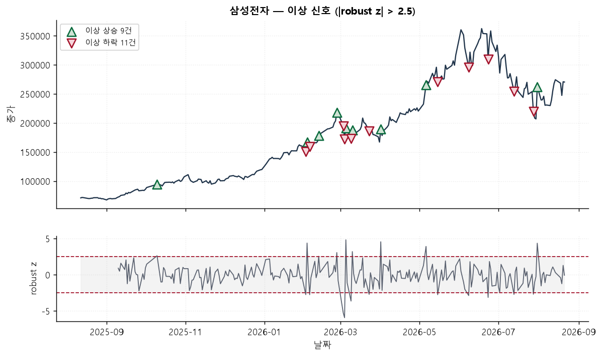
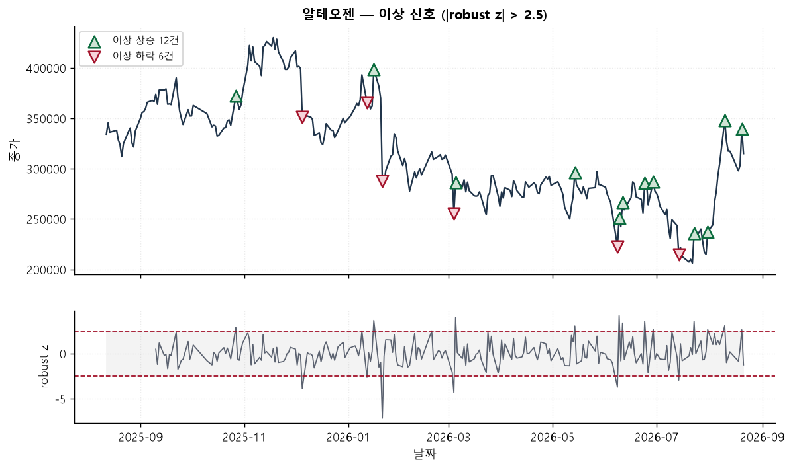
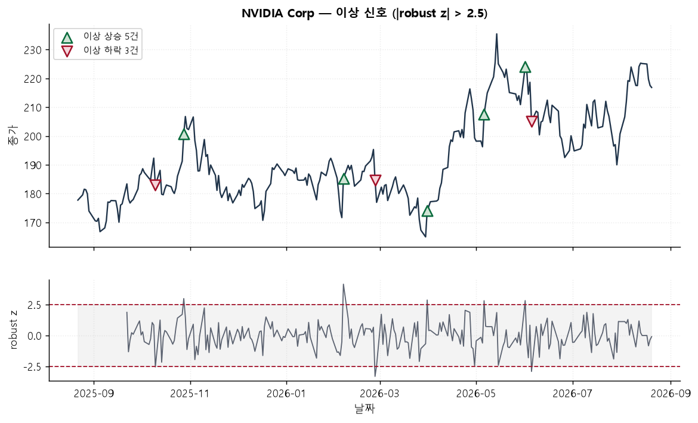
4. 차트 유사도
비교군 140종목에서 20봉 · 60봉 · 120봉 · 250봉 네 창을 각각 돌려 닮은 구간을 찾는다. z-정규화하므로 5만원짜리와 50만원짜리를 같은 자리에서 비교할 수 있다 — 가격이 아니라 모양을 본다.
창을 하나만 쓰지 않는 이유는 창마다 다른 질문에 답하기 때문이다. 20봉은 ‘지금 이 모양’이고 250봉은 ‘올해 전체 흐름’이다. 하나로 합치면 둘 다 잃는다. 2년(500봉)은 겹치지 않는 구간이 종목당 3~4개뿐이라 뺐다 — 그 정도면 ‘닮은 구간 4개’가 사실상 전부라 비교가 되지 않는다.
삼성전자
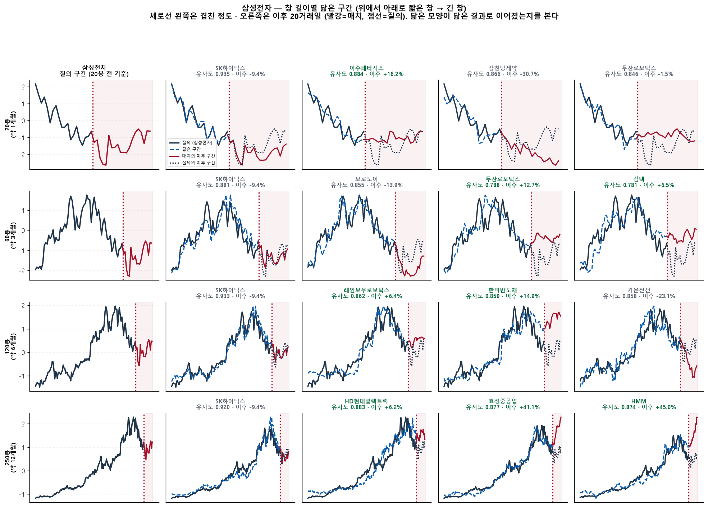
알테오젠
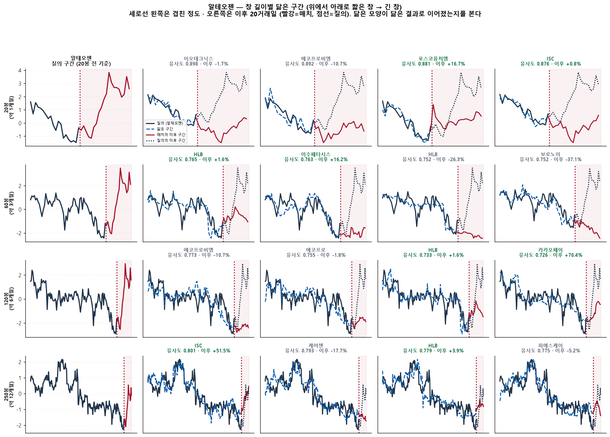
네 창에서 공통으로 올라온 종목
한 창에서만 1등인 종목보다 여러 창에 걸쳐 올라온 종목이 더 믿을 만하다. 공통 창 수를 세어 정렬한다.
| 질의종목 | 닮은종목 | 공통창수 | 최고유사도 |
|---|---|---|---|
| SK스퀘어 | SK하이닉스 | 4 | 0.9690 |
| SK스퀘어 | 삼성전자 | 3 | 0.8946 |
| SK스퀘어 | LG씨엔에스 | 1 | 0.8290 |
| SK스퀘어 | 레인보우로보틱스 | 1 | 0.8583 |
| SK스퀘어 | 로보티즈 | 1 | 0.8685 |
| SK하이닉스 | 삼성전자 | 4 | 0.9354 |
| SK하이닉스 | 이수페타시스 | 3 | 0.9104 |
| SK하이닉스 | 보로노이 | 2 | 0.8772 |
| SK하이닉스 | 레인보우로보틱스 | 2 | 0.8646 |
| SK하이닉스 | HPSP | 1 | 0.8736 |
| 삼성전자 | SK하이닉스 | 4 | 0.9354 |
| 삼성전자 | 두산로보틱스 | 2 | 0.8464 |
| 삼성전자 | HMM | 1 | 0.8739 |
| 삼성전자 | HD현대일렉트릭 | 1 | 0.8829 |
| 삼성전자 | 가온전선 | 1 | 0.8581 |
| 알테오젠 | HLB | 3 | 0.7788 |
| 알테오젠 | ISC | 2 | 0.8757 |
| 알테오젠 | 에코프로비엠 | 2 | 0.8924 |
| 알테오젠 | 보로노이 | 1 | 0.7525 |
| 알테오젠 | 에코프로 | 1 | 0.7550 |
| 에코프로 | 에코프로비엠 | 4 | 0.9568 |
| 에코프로 | 에이비엘바이오 | 3 | 0.8325 |
| 에코프로 | 효성중공업 | 2 | 0.8233 |
| 에코프로 | HLB | 2 | 0.8528 |
| 에코프로 | HD현대일렉트릭 | 1 | 0.8663 |
| 에코프로비엠 | 에코프로 | 4 | 0.9568 |
| 에코프로비엠 | 보로노이 | 2 | 0.8678 |
| 에코프로비엠 | 효성중공업 | 2 | 0.8620 |
| 에코프로비엠 | SK하이닉스 | 1 | 0.8453 |
| 에코프로비엠 | OCI홀딩스 | 1 | 0.7979 |
| 포스코인터내셔널 | 케어젠 | 2 | 0.8849 |
| 포스코인터내셔널 | LS | 1 | 0.8017 |
| 포스코인터내셔널 | ISC | 1 | 0.8700 |
| 포스코인터내셔널 | SKC | 1 | 0.8218 |
| 포스코인터내셔널 | 삼성E&A | 1 | 0.8045 |
재현
python cli.py results # 전체 재생성 (기본 40거래일)
python cli.py results --days 7 # 짧게 시연할 때
python cli.py forecast # 예측만
python cli.py risk # 이상감지·위험도만
python cli.py index # 이 페이지만 다시 만들기